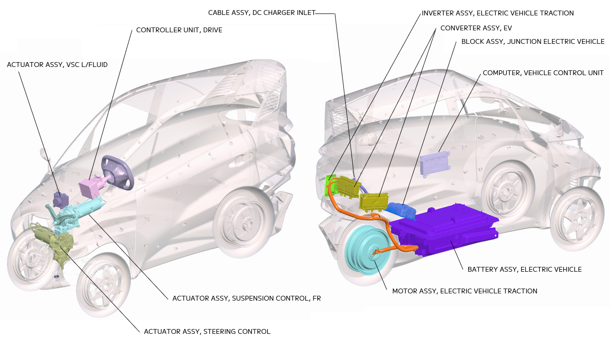

1. 構成部品

|
ACTUATOR ASSY, VSC L/FLUID |
|
|
CONTROLLER UNIT, DRIVE |
ステアリング操作に対してフィードバックトルクを発生させます。 |
|
CABLE ASSY, DC CHARGER INLET |
100Vまたは200V充電器からの充電用アダプターを接続する充電口です。 |
|
INVERTER ASSY, ELECTRIC VEHICLE TRACTION |
高電圧バッテリから供給される直流電流を交流電流に変換しリヤホイールインモータに電力を供給します。 |
|
CONVERTER ASSY, EV |
高電圧バッテリの76V電力を降圧し12V電力を生成します。 |
|
BLOCK ASSY, JUNCTION ELECTRIC VEHICLE |
76V電力を高電圧バッテリ、インバーター、A/Cコンプレッサー、DC-DCコンバータなどの高電圧部品へ電力を分配します。 |
|
COMPUTER, VEHICLE CONTROL UNIT |
|
|
BATTERY ASSY, ELECTRIC VEHICLE |
モーター駆動用の高電圧(76V)バッテリです。 |
|
MOTOR ASSY, ELECTRIC VEHICLE TRACTION |
高電圧バッテリからの電力により駆動し、車輪に直接駆動力を与えます。 |
|
ACTUATOR ASSY, SUSPENSION CONTROL, FR |
横Gに応じ前輪２輪に接続されるリーン機構のトルク制御により車両を傾ける姿勢制御を行います。 |
|
ACTUATOR ASSY, STEERING CONTROL |
ユーザーのステアリング操作に応じ、前輪２輪の位置制御により進行方向を変更する舵取り制御を行います。 |